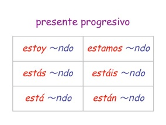

進行相 progresivo

-
英語と同様にスペイン語にも、動作や現象が現前で生じていることを示す進行相がある。
Estoy escribiendo el informe. (I’m writing the report.)
Ella está trabajando en el restaurante.
(She is working at the restaurtante.)
Está lloviendo mucho. (It’s raining hard.)
-
進行相は動詞 estar ＋ 現在分詞で表す。
-
 現在分詞は動詞の不定形の語尾を-ndoに変えて作る。
現在分詞は動詞の不定形の語尾を-ndoに変えて作る。
-ar => -ando estudiando (studying), trabajando (working), ...
-er => -iendo comiendo (eating), viendo (seeing), ...
-ir => -iendo escribiendo (writing), saliendo (going out), ...
-
つぎの動詞の現在分詞は-yendoになる。
ir (to go) => yendo (going)
leer (to read) => leyendo (reading)
